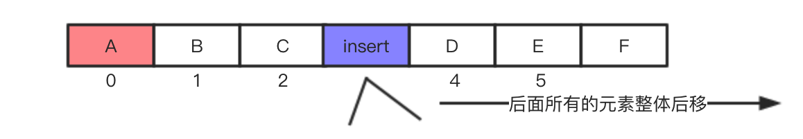
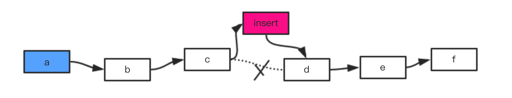
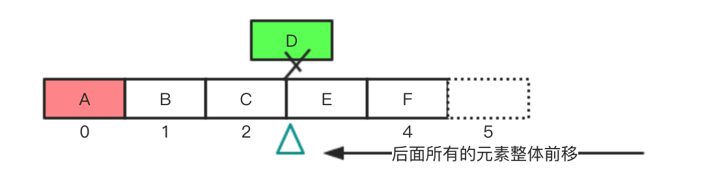
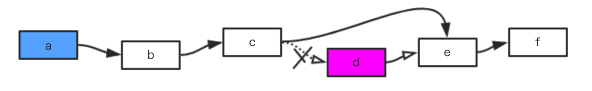
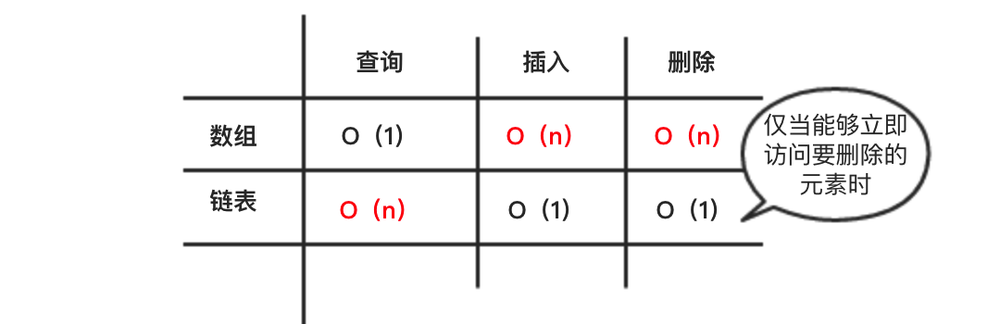
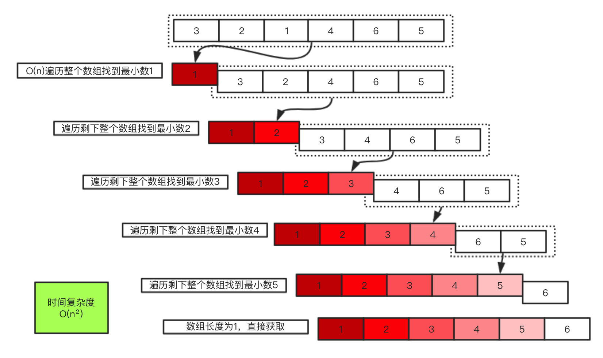

数据结构与算法 [01]-数组、链表和选择排序
Oct 13, 2016 ✧ 字数统计:933(字) ♨︎ 阅读时长:3(分钟)
本文花几分钟时间简单总结
数组和链表两种数据结构，以及选择排序算法。特征说明不涉及具体的语言，代码示例使用JavaScript语言实现。
数组
数组用来存储多个数据。
数组中存储元素的地址是连续的。
数组中的元素拥有索引，索引从0开始依次递增。
链表
链表用来存储多个数据。
链表中存储数据的地址可以是不连续的。
链表中的每个数据用于指针，指向下一个数据。
数组和链表操作比较
① 插入数据
数组在插入数据的时候，需要考虑到是否有连续的内存地址，如果没有那么可能需要挪动整个数组。如果从数组的中间位置插入，那么在空间足够的情况下，需要将后面元素整体向后移动。

链表在插入数据的时候，只需要修改插入位置前这个元素指向的地址即可，更方便。

② 删除数据
数组删除数据的时候，后面所有的元素都向前移动，区别于插入操作，删除元素的时候总能成功。

链表删除在数据的时候，只需要修改前一个元素指向的地址即可。

③ 查询操作
链表在进行数据查询操作的时候，如果需要读取最后一个元素的数据，那么不能够直接读取，因为我们无法直接知道它所处的地址，必须通过第一个元素依次向后查找，效率很低。
数组在进行查询操作的时候，因为我们清楚的明白数组中每个元素的地址，所以我们可以通过其索引迅速的找到任意元素。
下面给出数组和链表相关操作的运行时间。

选择排序
核心思想
❐ 先找出所有数据中最小的数，存储。
❐ 再在剩余数据中找出所有数据中最小的数，存储。
❐ 重复上面的过程。
选择排序的实现可以用伪代码表示为
1 | def selectionSort(arr); |
算法图解

选择排序时间复杂度说明：在使用选择排序的时候，每次都需要遍历数组检查数组中的最小值，该时间计为n，对于上面时间为O(n)的操作需要执行n次，因此其时间复杂度为O(n²)。
随着排序的进行，每次需要检查的元素数量在逐渐减少，最后一次需要检查的元素只有一个，既然这样那`为什么时间复杂度还是O(n²) ？` 在这里，平均每次检查的元素个数为1/2 \* n ,因此时间复杂度应该为O（n \* 1/2*n），也就是O(1/2n²) ，但是大O表示法省略诸如这里1/2这样的常数。

JavaScript代码示例
1 | function selectionSort(array){ |